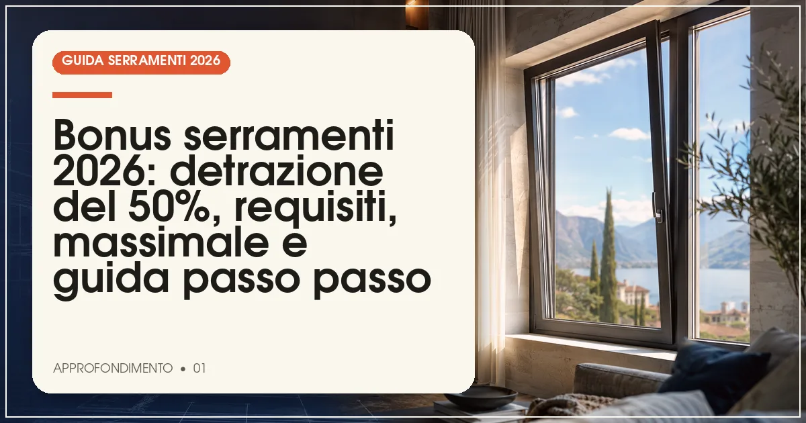

Il bonus serramenti 2026 consente di detrarre il 50% della spesa per la sostituzione di infissi e finestre su edifici esistenti, con un massimale di 60.000 euro per unità immobiliare. Servono serramenti conformi ai valori limite di trasmittanza termica, pagamento con bonifico parlante e invio della pratica ENEA entro 90 giorni dalla fine dei lavori.
In sintesi
- La detrazione è del 50% della spesa, con massimale di 60.000 euro per unità immobiliare.
- I nuovi serramenti devono rispettare i valori limite di trasmittanza termica Uw per zona climatica.
- Il pagamento va tracciato con bonifico parlante: niente contanti né carte.
- La pratica ENEA va trasmessa online entro 90 giorni dalla fine dei lavori.
- La posa in opera qualificata secondo la norma UNI 11673 è fortemente consigliata per prestazioni e pratica.

Sostituire i vecchi serramenti resta, anche nel 2026, uno degli interventi di riqualificazione energetica più richiesti dagli italiani: le finestre sono responsabili di una quota consistente delle dispersioni termiche di un edificio, e la loro sostituzione si traduce in bollette più leggere, comfort migliore e un incremento del valore dell'immobile. La detrazione fiscale del 50% confermata per quest'anno rende l'operazione ancora più conveniente, ma le regole per accedervi sono precise e gli errori formali restano la prima causa di perdita del beneficio.
In questa guida abbiamo raccolto tutto quello che serve sapere: chi può accedere al bonus, quali interventi sono ammessi, i valori limite di trasmittanza termica per zona climatica, la documentazione da conservare e l'iter corretto tra bonifico parlante e pratica ENEA. Per il quadro normativo aggiornato sui valori Uw rimandiamo al nostro approfondimento sul decreto trasmittanza termica 2026.
Cos'è il bonus serramenti 2026 e come funziona la detrazione del 50%?
Il bonus serramenti 2026 è la detrazione fiscale riconosciuta per la sostituzione di finestre, porte-finestre, scuri e persiane su edifici esistenti, nell'ambito degli interventi di riqualificazione energetica e di ristrutturazione edilizia. L'aliquota è pari al 50% della spesa sostenuta, calcolata su un massimale di 60.000 euro per unità immobiliare: il vantaggio massimo è dunque di 30.000 euro, recuperato in 10 rate annuali di pari importo in dichiarazione dei redditi.
La detrazione copre non solo il costo dei serramenti, ma anche le spese strettamente connesse: la posa in opera, lo smontaggio e lo smaltimento dei vecchi infissi, le opere murarie necessarie e le prestazioni professionali collegate all'intervento. Non sono invece detraibili le spese per la sola manutenzione ordinaria o la sostituzione dei vetri senza sostituzione del serramento completo.
Chi può accedere al bonus serramenti 2026?
Possono beneficiare della detrazione tutti i contribuenti che sostengono le spese e possiedono o detengono l'immobile: proprietari, nudi proprietari, titolari di diritto di usufrutto o uso, inquilini con regolare contratto di locazione e comodatari. L'agevolazione spetta anche per le seconde case e per le unità immobiliari strumentali, sempre nel rispetto del massimale per singola unità.
Le condizioni di fondo sono tre: l'immobile deve essere esistente (la detrazione non si applica alle nuove costruzioni), l'intervento deve consistere nella sostituzione di componenti già presenti o nella loro integrazione, e i nuovi serramenti devono garantire un miglioramento delle prestazioni energetiche rispetto a quelli rimossi, dimostrato dal rispetto dei valori limite di trasmittanza.
Quali sono i requisiti tecnici e i valori limite di trasmittanza?
Il requisito tecnico centrale è la trasmittanza termica Uw del nuovo serramento, cioè la quantità di calore che attraversa la finestra completa di telaio e vetro: più basso è il valore, migliore è l'isolamento. I valori limite variano in base alla zona climatica del Comune in cui si trova l'immobile, secondo la classificazione nazionale da A a F. La tabella seguente riporta i valori tradizionalmente applicati: si tratta di valori indicativi da verificare sempre sul testo aggiornato del decreto requisiti minimi, perché gli aggiornamenti normativi possono modificarli.
| Zona climatica | Uw limite indicativo (W/m²K) | Esempi di città |
|---|---|---|
| A | 2,60 | Lampedusa, Porto Empedocle |
| B | 2,20 | Catania, Agrigento, Reggio Calabria |
| C | 1,80 | Roma, Napoli, Bari |
| D | 1,40 | Firenze, Genova, Perugia |
| E | 1,00 | Milano, Torino, Bologna, Venezia |
| F | 1,00 | Trento, Belluno, Aosta |
Nota: i valori sono indicativi e possono essere aggiornati dai decreti attuativi. Prima dell'acquisto fate sempre verificare al fornitore la conformità del serramento scelto alla zona climatica del vostro Comune.
Attenzione a un punto spesso sottovalutato: il valore che conta è quello della finestra completa (vetro più telaio), dichiarato dal produttore secondo la norma UNI EN 14351-1, non quello del solo vetro. Una finestra con ottimo vetro ma profilo mediocre può non raggiungere il limite richiesto. Se state valutando i modelli, la nostra guida alle finestre per il risparmio energetico confronta le prestazioni dei principali sistemi sul mercato.
Come si richiede la detrazione: bonifico parlante, pratica ENEA e documenti
Il bonifico parlante
Tutti i pagamenti devono essere effettuati con bonifico bancario o postale parlante, che deve riportare: la causale con riferimento alla norma agevolativa, il codice fiscale di chi beneficia della detrazione e la partita IVA (o il codice fiscale) dell'impresa fornitrice. Sono esclusi contanti, assegni e carte di credito. Conservate le ricevute: in caso di controllo, la mancanza del bonifico corretto è il motivo più frequente di revoca del beneficio.
La pratica ENEA entro 90 giorni
Entro 90 giorni dalla fine dei lavori va trasmessa telematicamente all'ENEA la scheda descrittiva dell'intervento, con i dati dell'immobile, dei serramenti rimossi e di quelli installati (dimensioni, trasmittanza, tipologia). La trasmissione è gratuita e può essere fatta direttamente dal contribuente sul portale ENEA o delegata a un tecnico. Per i lavori ancora in corso, la scadenza decorre dal collaudo o dal termine effettivo dell'intervento.
I documenti da conservare
- Fatture e ricevute dei bonifici parlanti.
- Schede tecniche e dichiarazioni di prestazione dei serramenti (marcatura CE, UNI EN 14351-1).
- Ricevuta di trasmissione della pratica ENEA.
- Eventuale asseverazione di un tecnico abilitato, se richiesta per la casistica specifica.
- Titolo abilitativo o comunicazione al Comune, quando necessario.
Quali sono gli errori più comuni da evitare?
L'esperienza dei commercialisti e dei patronati segnala una serie di errori ricorrenti che possono costare la detrazione. Ecco quelli da evitare con maggiore attenzione:
- Acquistare serramenti non conformi ai valori limite della propria zona climatica: verificate il valore Uw in fase di preventivo, non dopo l'installazione.
- Pagare con carta o contanti: solo il bonifico parlante dà diritto alla detrazione.
- Dimenticare la pratica ENEA o inviarla oltre i 90 giorni: la scadenza è perentoria.
- Confondere il valore del vetro con quello della finestra: conta la trasmittanza Uw complessiva.
- Trascurare la posa in opera: una posa scorretta vanifica le prestazioni dichiarate. Affidatevi a posatori qualificati secondo la norma UNI 11673, che definisce i requisiti della posa in opera qualificata dei serramenti.
- Intestare fatture e bonifici a persone diverse dal beneficiario della detrazione.
Il bonus serramenti si può cumulare con altri incentivi?
La detrazione del 50% non è cumulabile, per le medesime spese, con altre agevolazioni fiscali statali come il Conto Termico 3.0 del GSE, che pure copre la sostituzione dei serramenti: bisogna scegliere il canale più conveniente. Il Conto Termico può risultare interessante per interventi di importo contenuto, perché prevede un rimborso diretto in tempi brevi anziché in 10 anni; la detrazione Irpef conviene in genere per importi più elevati e a chi ha capienza fiscale sufficiente. Restano invece cumulabili, secondo le regole vigenti, gli incentivi locali o regionali non fiscalmente assimilabili. Per valutare la convenienza economica complessiva dell'intervento può essere utile consultare il nostro quadro sui prezzi dei serramenti nel 2026, con l'andamento dei listini per materiale.
Domande frequenti sul bonus serramenti 2026
Quanto si può detrarre al massimo con il bonus serramenti 2026?
La detrazione è pari al 50% della spesa sostenuta, con un massimale di 60.000 euro per unità immobiliare: il beneficio massimo è quindi di 30.000 euro, recuperabili in 10 quote annuali di pari importo in dichiarazione dei redditi.
Il bonus serramenti spetta anche per le seconde case?
Sì, la detrazione del 50% per la sostituzione dei serramenti spetta anche sulle seconde case, purché si tratti di edifici esistenti, l'intervento sia configurabile come risparmio energetico o ristrutturazione e i nuovi infissi rispettino i valori limite di trasmittanza termica previsti.
Entro quando va inviata la pratica ENEA per il bonus serramenti?
La scheda descrittiva dell'intervento va trasmessa telematicamente all'ENEA entro 90 giorni dalla fine dei lavori. Per i lavori in corso, la scadenza decorre dal collaudo o comunque dal termine effettivo dell'intervento. La mancata trasmissione può compromettere la detrazione.
Serve il bonifico parlante per il bonus serramenti 2026?
Sì, il pagamento deve avvenire con bonifico bancario o postale parlante, che riporta la causale del versamento, il codice fiscale del beneficiario della detrazione e la partita IVA o il codice fiscale del fornitore. Pagamenti in contanti o con carte non danno diritto alla detrazione.
Fonti e riferimenti ufficiali
Le informazioni di questo articolo fanno riferimento alla documentazione ufficiale degli enti competenti. Verifica sempre gli aggiornamenti sulle fonti primarie prima di prendere decisioni.